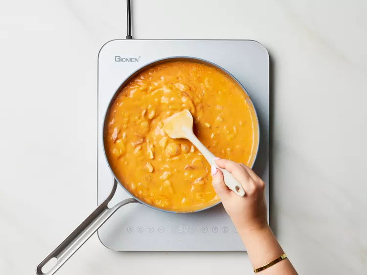
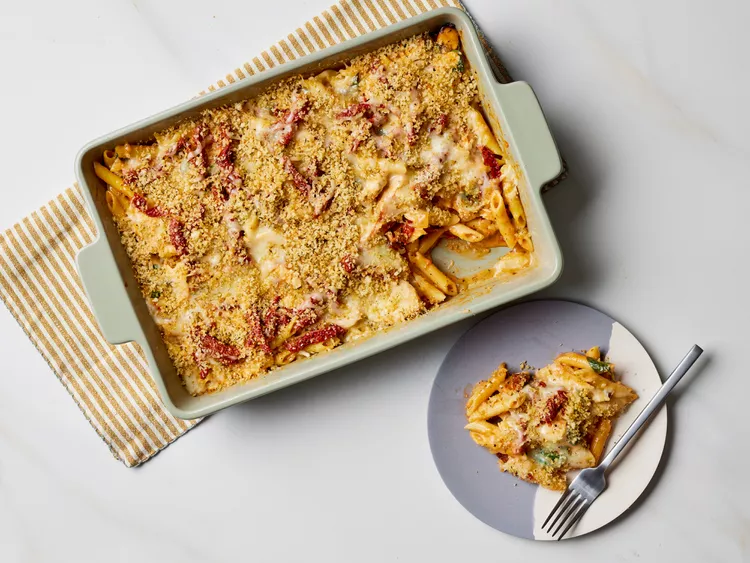

Ингридиенты:
- 680 г сухой пасты пенне
- 900 г куриного филе (без костей и кожи)
- 2 ч. ложки свежемолотого черного перца
- 5 ч. ложек итальянских трав (разделить на части)
- 5 ч. ложек соли (разделить на части)
- 480 мл (2 стакана) вяленых томатов из банки, нарезанных соломкой, без жидкости
- 120 мл (8 ст. ложек) масла из банки с вялеными томатами (разделить на части)
- 3 стакана (400 г) мелко нарезанного желтого лука
- 12 крупных зубчиков чеснока, тонко нарезанных
- 160 мл (⅔ стакана) сухого белого вина
- 4 ст. ложки томатной пасты
- 6 ст. ложек сливочного масла
- 6 ст. ложек муки
- 480 мл (2 стакана) цельного молока
- 280 г свежего молодого шпината
- 400 г тертого сыра моцарелла или фонтина (разделить на части)
- 100 г свеженатертого пармезана (разделить на части)
- 100 г панировочных сухарей панко
- Свежие листья базилика (по вкусу)
Приготовление:
-
Шаг 1
Соберите все ингредиенты. Разогрейте духовку до 175 °C.
-
Шаг 2
Доведите большую кастрюлю с водой до кипения на сильном огне. Добавьте пасту и варите, изредка помешивая, до состояния аль денте, 8–10 минут. Отложите 1 стакан воды, в которой варилась паста. Слейте воду и переложите пасту в неприготовленную форму для запекания размером 33 × 23 см.
-
Шаг 3
Приправьте куриные грудки черным перцем, 1 чайной ложкой итальянских трав и 1 чайной ложкой соли, равномерно распределив. Нагрейте 2 столовые ложки масла из вяленых томатов в большой сковороде на среднем огне до легкого блеска. Добавьте куриные грудки и жарьте до золотистого цвета, пока термометр, вставленный в самую толстую часть, не покажет 73 °C, 10–15 минут, периодически переворачивая. Переложите на разделочную доску и дайте отдохнуть 5 минут. Нарежьте курицу тонкими ломтиками и добавьте к пасте в форме для запекания. Сковороду не очищайте.
-
Шаг 4
Добавьте 1 столовую ложку масла из вяленых томатов в сковороду и верните на средний огонь. Положите лук и чеснок и жарьте, часто помешивая, до мягкости, около 6 минут. Добавьте белое вино, томатную пасту и 1/2 стакана вяленых томатов, готовьте, часто помешивая, пока жидкость не уменьшится наполовину, около 2 минут. Вмешайте сливочное масло до полного растворения. Посыпьте мукой смесь с вялеными томатами и готовьте, постоянно помешивая, пока масса не станет густой и пастообразной, около 1 минуты. Постепенно влейте отложенную воду от варки пасты и молоко.
-
Шаг 5
Готовьте, часто помешивая, пока соус не загустеет и станет однородным, около 2 минут.
 -
Шаг 6
Добавьте шпинат, 1 чайную ложку итальянских трав и оставшиеся 1,5 чайные ложки соли. Готовьте на среднем огне, постоянно помешивая, пока шпинат не увянет и не станет ярко-зеленым, около 2 минут. Снимите с огня и добавьте 1 стакан моцареллы и 1/4 стакана пармезана, перемешивая, пока сыр не расплавится. Переложите смесь к пасте в форме для запекания и тщательно перемешайте. Отложите в сторону.
-
Шаг 7
Нагрейте оставшуюся 1 столовую ложку масла из вяленых томатов в небольшой сковороде на среднем огне. Добавьте панировочные сухари панко и оставшиеся 1/2 чайной ложки итальянских трав, жарьте, постоянно помешивая, до золотистого цвета, около 2 минут. Снимите с огня. Посыпьте пасту оставшимися 1/2 стакана вяленых томатов, 1 стаканом моцареллы, 1/4 стакана пармезана и поджаренной смесью панко.
-
Шаг 8
Запекайте в разогретой духовке, пока сыр не расплавится, около 15 минут. Украсьте базиликом.
